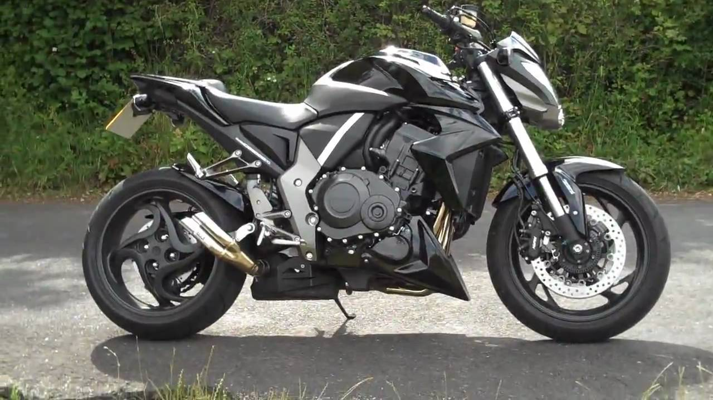
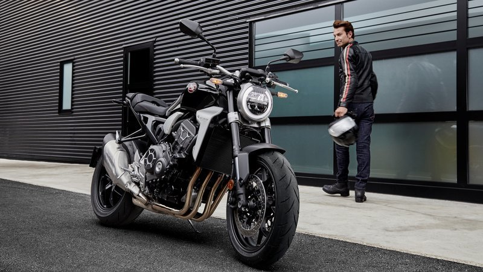
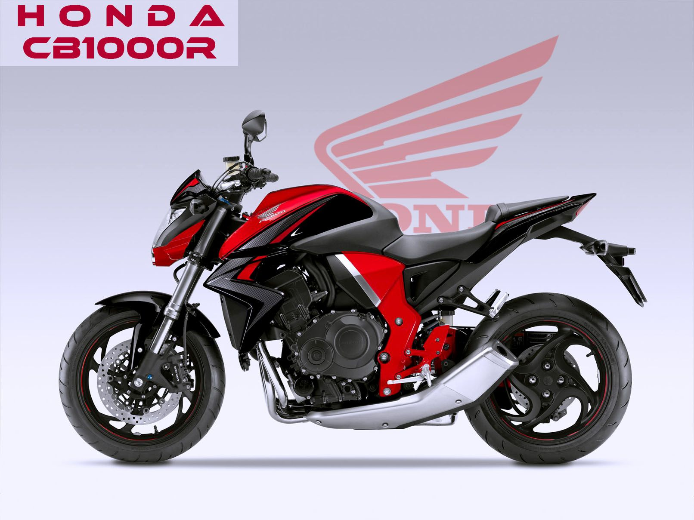
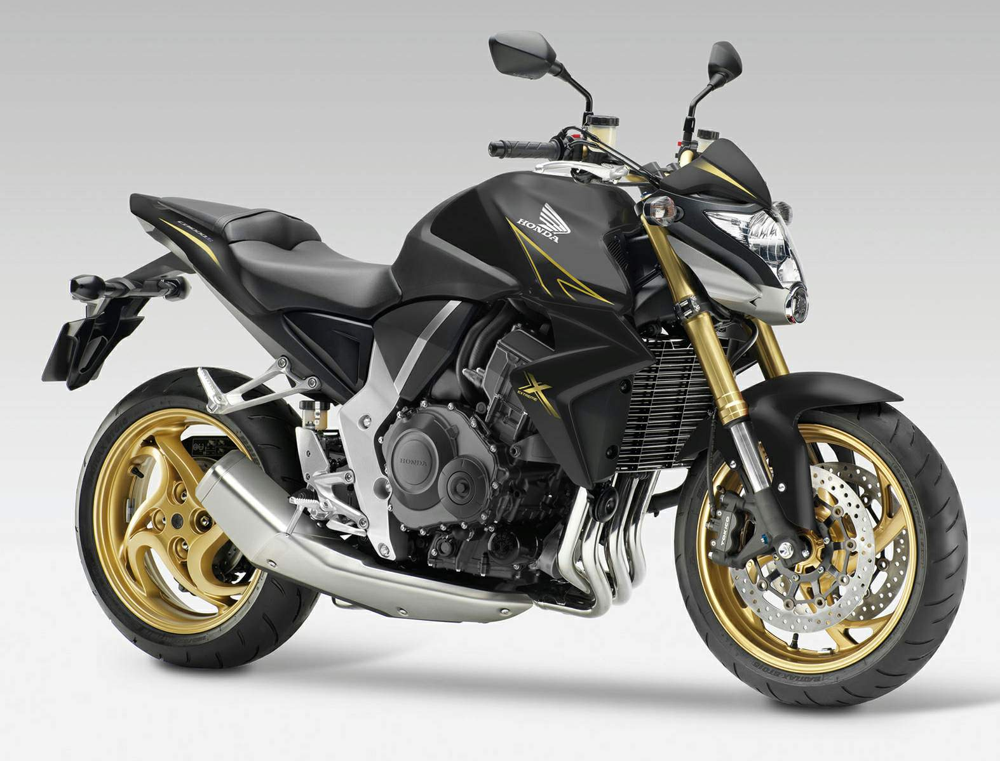

Тип: 4-тактный, 4-цилиндровый DOHC жидкостного охлаждения
Рабочий объем, см3: 998
Количество клапанов на цилиндр: 4
Диаметр и ход поршня: 75 мм x 56.5 мм
Степень сжатия 11,6:1
Макс. Мощность 107 Квт при 10500 об/мин
Макс. крутящий момент 104 Нм при 8000 об/мин
Система питания Инжектор PGM-FI/p>
Емкость топливного бака 16.2 л
Потребление топлива 17.2 км/л
Стартер Электрический
АКБ 12В/8,6 А-ч
Тим сцепления Многодисковое в масляной ванне
Тип трансмиссии Механическая 6-ступенчатая
Привод на заднее колесо Цепью
В CB1000R 2018 года большое элегантно сочетается с малым. Это дает пилоту огромный объем доступной и подконтрольной мощности двигателя, но также и отточенную подконтрольность машины класса Supersports, тогда как инновационный, минималистичный стиль заставляет относиться к нему совсем иначе.
4-цилиндровый двигатель был настроен для более чем на 16% большей отдачи на оборотах выше 10,000 и на 5% больше крутящего момента, начиная с середины диапазона, где он эксплуатирует чаще всего — и где это всегда в кайф. Передаточные отношения также на 4% короче, чтобы добиться лучшего ускорения и самых низов. На деле, на первых 3 передачах с нуля до 130 км/ч CB1000R ускоряется даже лучше, чем CBR1000RR. Проскальзывающее сцепление с функцией поддержки добавляет контроля.
С увеличением отдачи, необходимым элементом стала бесконтактная ручка «газа» Throttle By Wire (TBW) с 3 предустановленными режимами пилотирования и одним пользовательским (USER). Контроль мощности (P), торможения двигателем (EB) и трекшн-контроль Honda Selectable Torque Control (HSTC) работают совместно в рамках этих настроек, чтобы принести оптимальную пользу пилоту в зависимости от различных условий. Выпускная система передает без искажений равномерный звук без надрыва при повышении оборотов.
CB1000R 2018 года на 12 кг легче предшествующей модели, при этом обеспечивает более чем 20% лучшее соотношение мощности к массе. Он также меньше, при этом обеспечивает более расслабленную посадку. За управляемость отвечает новое шасси — это новая стальная хребтовая рама коробчатого типа, вилка перевернутого типа with Showa Separate Function Fork — Big Piston (SFF-BP) и моноамортизатор Showa сзади. Радиальные передние тормоза с ABS и 190-е заднее колесо дополняют апгрейд шасси.
